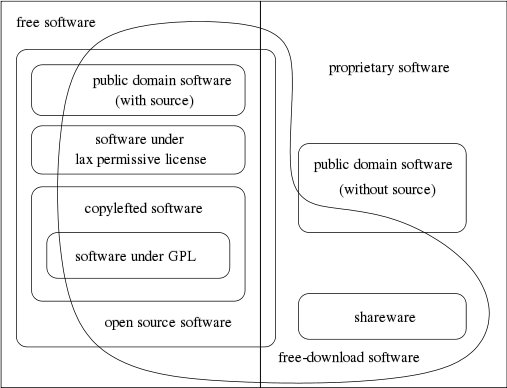

![[image of a Philosophical Gnu]](/graphics/philosophical-gnu-sm.jpg) [ Alemão | Catalão | Checo | Espanhol | Francês | Indonésio | Inglês | Italiano | Japonês | Polonês | português do Brasil | Russo ]
[ Alemão | Catalão | Checo | Espanhol | Francês | Indonésio | Inglês | Italiano | Japonês | Polonês | português do Brasil | Russo ]
Este é um glossário de várias categorias de software
que são frequentemente mencionadas em discussões de software
livre. Aqui explicamos que categorias se sobrepõem, ou são
partes de outras categorias.
Outros textos | ``Software Livre'' | ``Código aberto'' | ``Domínio público'' | ``Software protegido com copyleft'' | ``Software livre não protegido com copyleft'' | ``Software coberto pela GPL'' | ``O sistema GNU'' | ``Programas GNU'' | ``Software GNU'' | ``Software semi-livre'' | ``Software proprietário'' | ``Shareware'' | ``Freeware'' | ``Software comercial'' | Outros textos
Veja também Palavras confusas que você poderia evitar.
 Este diagrama de Chao-Kuei explica as diferentes categorias de software. Está disponível como um arquivo XFig, uma imagem JPEG (23k) e ampliada em formato PNG (7k).
Nós também temos uma lista de traduções do termo "software livre" para várias outras línguas.
Se um programa é livre, ele pode potecialmente ser incluido em um sistema operacional livre, como o GNU, ou versões livres como o sistema GNU/Linux.
Existem muitas diferentes maneiras de se fazer um programa livre --- muitos detalhes que poderiam ser resolvidos em mais de uma maneira, e que ainda tornariam o programa livre. Algumas das possíveis variações são descritas abaixo.
Devido a essa potencial confusão, quando uma empresa de software disser que seu produto é software livre, sempre verifique os termos de distribuição para ver se os usuários realmente possuem todas as liberdades que o software livre implica. Às vezes o software é mesmo livre; às vezes, não é.
Software livre é frequentemente mais confiável do que softwares não-livres.
Algumas vezes pessoas usam o termo ``domíno público'' de uma forma imprecisa para dizer ``livre'' ou ``disponível gratuitamente'' . No entanto, ``domínio público'' é um termo legal e significa, precisamente, ``sem copyright''. Por claridade, recomendamos usar o termo ``domínio público'' para este significado apenas, e usar outros termos para transmitir os outros significados.
No projeto GNU, nós protegemos com copyleft praticamente todo software que escrevemos, pois nosso objetivo é dar a todo usuário as liberdades que o termo ``software livre'' implica. Veja protegido por copyleft para maior explicação sobre como o copyleft funciona e por que o usamos.
Copyleft é um conceito geral; para realmente proteger um programa com copyleft, você precisa usar um conjunto específico de termos de distribuição. Existem muitas possíveis maneiras de se escrever esses termos de distribuição, então em princípio podem haver muitas licenças de software livre do tipo copyleft. No entanto, na prática quase todo software protegido por copyleft usa a Licença Pública Geral GNU. Duas licenças diferentes do tipo copyleft normalmente são ``incompatíveis'', o que significa que é ilegal a união de código usando uma das licenças a código usando a outra lecença; portanto, é bom para a comunidade que as pessoas usem uma única licença copyleft.
Se um programa é livre mas não protegido com copyleft, algumas cópias ou versões modificadas podem não ser software livre. Uma empresa de sodtware pode compilar o programa, com ou sem modificações, e distribuir o arquivo executável na forma de um produto proprietário.
O sistema X Window ilustra isso. O X Consortium lança o X11 com termos de distribuição que o torna software livre não protegido com copyleft. Se você desejar, pode obter uma cópia com esses termos e que é livre. No entanto, também existem versões não livres, e existem estações de trabalho e placas gráficas populares para as quais as versões não livres são as únicas que funcionam. Se você estiver usando este hardware, o X11 não é livre para você.
Um sistema operacional estilo Unix consiste de muitos programas. O sistema GNU inclui todo o software GNU, bem como muitos outros pacotes como o X Window System e TeX, que não são software GNU.
Nós estamos desenvolvendo e acumulando componentes para o sistema GNU desde 1984; a primeira versão de testes de um ``sistema GNU completo'' foi em 1996. Hoje, em 2001, o sistema está funcionando de maneira confiável, e pessoas estão trabalhando no sistema GNOME, e ppp trabalha nele. Nesse meio tempo, o sistema GNU/Linux, um descendente do sistema GNU que usa o Linux como kernel, se tornou um grande sucesso.
Como o propósito do GNU é ser livre, todo componente no sistema GNU tem que ser software livre. Eles não precisam ser todos protegidos por copyleft, porém; qualquer tipo de software livre é legalmente apropriado para inclusão se ajudar a atender requisitos técnicos. Nós podemos e usamos softwares não protegidos com copyleft, como o X Window System.
Se um programa é software GNU, nós também dizemos que é um programa GNU.
Algum software GNU é escrito pela equipe da Free Software Foundation, mas a maior parte do software GNU é contribuição de voluntários. Algumas contribuições possuem copyright da Free Software Foundation; outras possuem copyright do contribuidor que o escreveu.
Software semi-livre é muito melhor do que software proprietário, mas ainda possui alguns problemas, e nós não podemos usá-los em um sistema operacional livre.
As restrições do copyleft foram criadas para proteger as liberdades essenciais de todos os usuários. Para nós, a única justificativa para qualquer restrição substantiva no uso de um programa é para prevenir a inclusão de novas restrições. Programas semi-livres possuem restrições adicionais, motivadas puramente por objetivos egoístas.
É impossível incluir software semi-livre em um sistema operacional livre. Isto ocorre por que os termos de distribuição do sistema operacional como um todo é a união dos termos de distribuição de todos os programas nele. Incluir um programa semi-livre ao sistema tornaria o sistema como um todo apenas semi-livre. Existem duas razões pelas quais não queremos que isso aconteça:
A Free Software Foundation é não-comercial, e portanto nós teríamos a permissão legal para usar programas semi-livres ``internamente''. Mas nós não fazemos isso, por que isso prejudicaria nossos esforços para obter um programa que nós também poderíamos incluir no sistema GNU.
Se existir um trabalho que necessite lidar com software, até que exista um programa livre para realizar este trabalho, o projeto GNU tem uma brecha. Nós temos que dizer aos voluntários, ``Nós não temos um programa ainda para fazer este trabalho em GNU, então esperamos que vocês escrevam um''. Se nós usássemos programas semi-livres para realizar este trabalho, isso prejudicaria o que dizemos; tiraria o ímpeto (de nós e de outros que poderiam compartilhar nossa visão) para escrever um substituto livre. Portanto, nós não fazemos isso.
A Free Software Foundation segue a regra de que não podemos instalar qualquer programa proprietário em nossos computadores, exceto temporariamente para o propósito específico de escrever um substituto livre para aquele mesmo programa. Além dessa, achamos que não há justificativa possível para instalar um programa proprietário.
Por exemplo, nós achamos justificável instalar Unix em nosso computador nos anos 80, por que o estávamos usando para escrever um substituto livre para Unix. Hoje em dia, que um sistema operacional livre está disponível, a desculpa não é mais aplicável; nós eliminamos todos nossos sistemas operacionais não-livres, e qualquer novo computador que instalamos precisa rodar um sistema operacional completamente livre.
Nós não insistimos que os usuários do GNU, ou contribuidores do GNU, tenham que viver com essa regra. Essa é uma regra que fizemos para nós mesmos. Mas esperamos que você decida seguí-la também.
Shareware não é software livre, ou mesmo semi-livre. Existe duas razões para isso:
Por exemplo, o GNU Ada é sempre distribuído sob os termos da GNU GPL, e toda cópia é software livre; mas seus desenvolvedores vendem contratos de suporte. Quando seus vendedores falam com clientes em potencial, algumas vezes os clientes dizem, ``Nós nos sentiríamos mais seguros com um compilador comercial''. Os vendedores respondem, ``GNU Ada é um compilador comercial, apenas acontece de ser um software livre''.
Para o Projeto GNU, a ênfase é de outra ordem: o importante é que o GNU Ada é software livre; se é comercial, não é uma questão crucial. No entanto, o desenvolvimento adicional do GNU Ada que resulta do mesmo ser comercial é definitivamente benéfico.
Por favor, ajude-nos a divulgar o fato de que software livre comercial é possível. Você pode fazer isso através de um esforço de não dizer ``comercial'' quando quer dizer ``proprietário''.
Para consultas e perguntas sobre FSF & GNU, favor contactar gnu@gnu.org. Outras maneiras de contactar a FSF.
Envie comentários a respeito dessas páginas web para webmasters@www.gnu.org, e outras questões para gnu@gnu.org.
Copyright (C) 1996, 1997, 1998, 2001 Free Software Foundation, Inc., 51 Franklin St, Fifth Floor, Boston, MA 02110, USA
Cópias exatas e a distribuição deste artigo são permitidas em qualquer meio, sempre que esta nota seja preservada.
Atualização: $Date: 2002/03/09 15:39:38
$ $Autor: Sisao $
Tradução: 2002/07/03 Nelson Ferraz
{kind=link}
{kind=link}